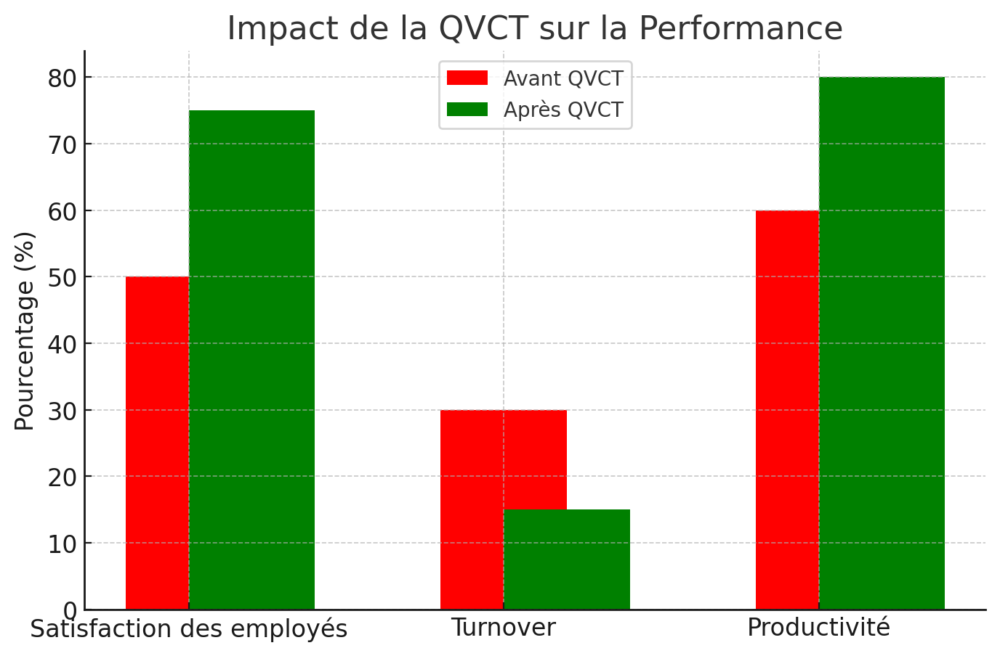
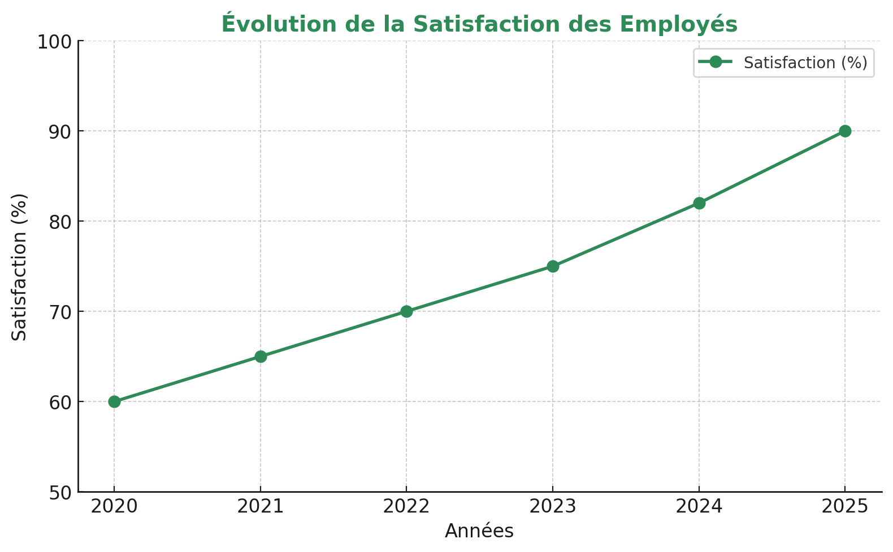

GreenTech Solutions est une startup spécialisée dans les énergies renouvelables. L'entreprise s'engage à améliorer la qualité de vie au travail (QVCT) pour favoriser la productivité et le bien-être des employés.
Objectif : Accélérer la transition vers des énergies renouvelables.
Engagement : Réduire l’empreinte carbone des entreprises et particuliers.
🧑🔬 Partenariats avec des laboratoires.
📈 20% du CA investi en R&D.
♻ Projets : stockage hydrogène, recyclage.
Les entreprises qui investissent dans la QVCT observent des améliorations significatives en matière de satisfaction et de productivité.
Notre stratégie repose sur des actions concrètes pour améliorer durablement la QVCT :
“Depuis la mise en place des mesures QVCT, notre engagement et notre motivation ont considérablement augmenté.” – Sarah, ingénieure chez GreenTech Solutions
“La flexibilité du télétravail et l’espace bien-être ont réduit mon stress et amélioré ma productivité.” – Karim, chef de projet
Pour mesurer l'impact des actions QVCT, nous suivrons les indicateurs suivants :
- Rapport ANACT sur la QVCT (2023).
- Harvard Business Review : Impact du bien-être au travail.
- Étude Gallup sur l'engagement des employés (2024).
- Livre "Le management bienveillant" de Isaac Getz.
- Organisation Mondiale de la Santé : Stress et productivité.